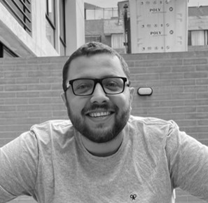

Carlos David Rojas Montaño

Soy un desarrollador de software de nivel intermedio, he trabajado principalmente backend con el lenguaje python en los frameworks Flask y FastAPI y con golang en el framework gin. Mi enfoque ha sido la arquitectura de microservicios y el diseño de sistemas. Durante los ultimos 2 años, he trabajado en la integración de IA generativa en distintas soluciones.
Antes de dedicarme al software, realicé una maestría (no concluida) entre los años 2019 y 2020, quería ser investigador en sistemas de potencia. Luego, trabajé desde 2019 en varias empresas de ingeniería eléctrica, principalmente como residente de múltiples proyectos por todo Colombia.
📌 Full Stack Software Engineer
📅 Enero 2022 - Presente
✅ Creacion de microservicios para la plataforma de Creangel utilizando FastAPI y Flask.
✅ Desarrollo de componentes para dashboards usando ReactJS para grandes volúmenes de datos (50M - 7000M de registros).
✅ Integracion de LLM en aplicaciones a traves de RAG, Busqueda Semantica y Agentes.
✅ Orquestacion de microservicios a traves de Docker y Kubernetes.
📌 Residente de Obra
📅 Agosto 2020 - Diciembre 2022
✅ Diagnóstico, planteamiento y ejecución de proyectos de Calidad de la Energía.
🎓 Ingeniería Eléctrica
📍 Universidad Nacional de Colombia
📅 2013 - 2018
🎓 Maestría en Análisis de Fenómenos Transitorios en Redes de Baja Tensión utilizando
Filtros de Kalman y Construcción de Prototipos
📍 Universidad Nacional de Colombia
📅 2019 - Presente